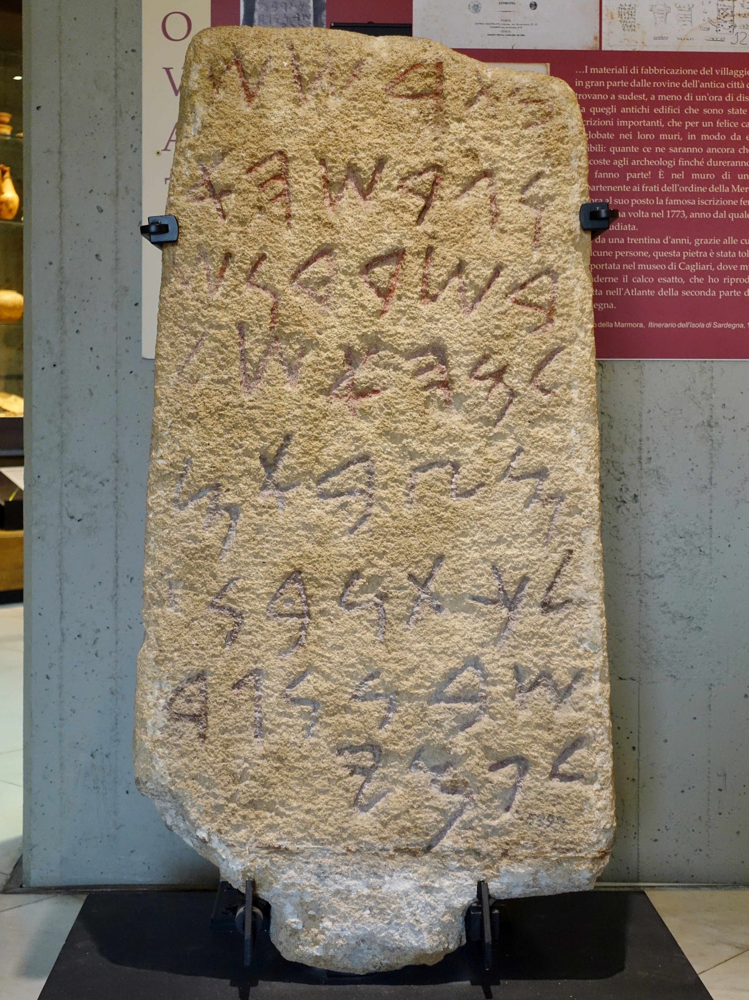

Nora Stone

- Find Name
- Nora Stone
- Description
- A Phoenician inscribed stone (KAI 46), about 3.5 feet high, found at Nora on Sardinia's south coast in 1773 and now in Cagliari. It is the oldest Phoenician inscription found outside the Levant. Its eight surviving lines name a Phoenician general, Milkaton son of Shubna, and a king Pummay, but the top of the stone is broken or disputed, and the first surviving line is read by some scholars as 'at Tarshish' (btršš) and by others as two words meaning 'a house he beat down'.
- Historical Period
- Iron Age II
- Evidence Class
- Disputed
- Interpretations
- DOUBT STATED: the Tarshish reading is disputed, not settled. Frank Moore Cross read the first line as 'at Tarshish' and identified Pummay with Pygmalion of Tyre, but other scholars divide the line differently and read the text as a temple-foundation or conquest record without Tarshish, and the stone was not found in its primary context, so no find context can settle the reading. The entry must present Tarshish as a proposed reading, not a fact.
- Alternative Names
- Nora Inscription; KAI 46
- Related Places
- Related Books
- Related People
- Scripture Illuminated
- Biblical Significance
- If the Tarshish reading is right, the stone would put the Bible's Tarshish, the distant source of silver in Solomon's and Jonah's day, in the western Mediterranean world of Phoenician trade, with Sardinia as a candidate alongside Spain. The stone certainly proves a Phoenician presence in Sardinia by the ninth century BC, the same seafaring network that carried Solomon's ships.
- Artifact Date
- Late 9th-early 8th century BC
- Current Location
- Museo Archeologico Nazionale, Cagliari, Sardinia
- Date Discovered
- 1773
- Discovery Location
- Nora, Sardinia, Italy
- Timeline Era
- Divided Monarchy
Awaiting Review Not yet checked against scholarly sources. Treat its claims as provisional until this entry is reviewed. About verification
Last reviewed: not yet reviewed